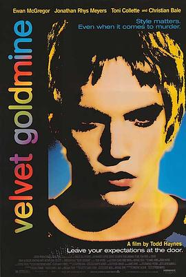

天鹅绒金矿 / Velvet Goldmine
又名：紫醉金迷(港) / 丝绒金矿 / 纸醉金迷
不喜欢
作品信息
| 导演 | 托德·海因斯 |
| 编剧 | 詹姆斯·莱昂斯 / 托德·海因斯 |
| 主演 | 伊万·麦克格雷格 / 乔纳森·莱斯·梅耶斯 / 克里斯蒂安·贝尔 / 托妮·科莱特 / 艾迪·伊扎德 / 艾米莉·伍夫 / 迈克尔·菲斯特 / 珍妮特·麦克蒂尔 / 卢克·摩根·奥利弗 / 奥欣·琼斯 / 沃什·韦斯特摩兰 / 唐·费洛斯 / 瑞恩·波普 / 詹姆斯·弗朗西斯 / 林赛·肯普 / 约瑟夫·比蒂 / 萨拉·卡伍德 / 彼得·金 / Roger Alborough / 威廉·基 / 布莱恩·莫尔克 / 安东尼·朗登 / Xavior / Steve Hewitt / 基思-李·卡斯尔 / Donna Matthews / 史蒂芬·欧斯戴 / 拉尔夫·摩士 |
| 类型 | 剧情 / 同性 / 音乐 |
| 制片国家/地区 | 英国 / 美国 |
| 语言 | 英语 / 法语 |
| 上映日期 | 1998-11-06 |
| 片长 | 118分钟 |
| IMDb | tt0120879 |
最后一次看到是 2026-08-12T21:12:59+08:00 · 豆瓣原页